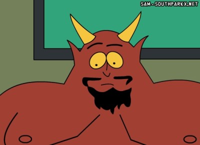

14. srpen 2006, 11:03 Kategorie: Webdesign
Identifikujte špatného klienta ještě před tím, než s ním začnete spolupracovat a ochraňte své duševní zdraví.
Máte-li webdesignové studio a osloví vás potenciální klient, nemusí to být vždy začátek příjemné spolupráce. Často tím usnete do spánku plného nočních můr, ve kterých vás milý klient bude pronásledovat s nabitou sešívačkou v jedné a zkrvaveným plánem projektu v druhé ruce.

Ne všichni klienti jsou takovými pohodáři jako Satan ze seriálu South Park. Být ďáblovým webdesignérem se pak nevyplácí.
A co vy, jak poznáte špatného klienta? Jakými zbraněmi s ním bojujete?
Ulož do delicious, linkuj.cz, jagg.cz, vybrali.sme.sk Díky!
Diskuze
[ RSS této diskuze ]
Misha, 14. 08. 06, 12:22, #
tom, 14. 08. 06, 12:40, #
Radek, 14. 08. 06, 16:08, #
migon, 14. 08. 06, 17:06, #
Marcel Simonides, 14. 08. 06, 19:24, #
ada, 14. 08. 06, 20:13, #
SasA, 14. 08. 06, 22:42, #
Petr, 15. 08. 06, 14:53, #
VlaDog, 16. 08. 06, 20:30, #
pixy, 19. 08. 06, 02:05, #
VlaDog, 20. 08. 06, 11:15, #
Frko, 21. 08. 06, 12:03, #
Komentáře jsou uzavřeny